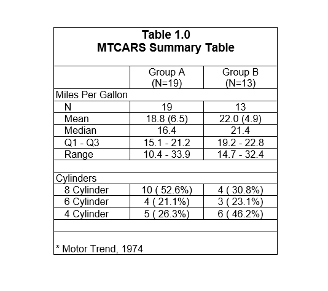
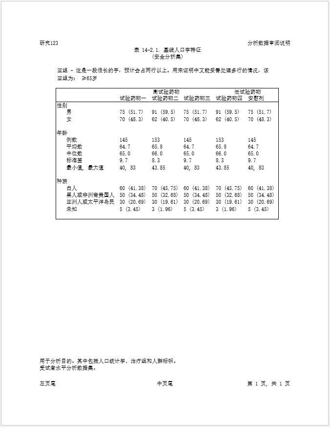

By default, the reporter package will create fixed-width style reports in Courier font. The package supports three additional fonts: Arial, Times New Roman, and SimSun. The package also supports the ability to turn on borders for your content. To demonstrate, the simple demographics table seen previously is reproduced below in Arial font with borders around the table, titles, and footnotes.
library(reporter)
# Create temporary path
tmp <- file.path(tempdir(), "example10.rtf")
# Read in prepared data
df <- read.table(header = TRUE, text = '
var label A B
"ampg" "N" "19" "13"
"ampg" "Mean" "18.8 (6.5)" "22.0 (4.9)"
"ampg" "Median" "16.4" "21.4"
"ampg" "Q1 - Q3" "15.1 - 21.2" "19.2 - 22.8"
"ampg" "Range" "10.4 - 33.9" "14.7 - 32.4"
"cyl" "8 Cylinder" "10 ( 52.6%)" "4 ( 30.8%)"
"cyl" "6 Cylinder" "4 ( 21.1%)" "3 ( 23.1%)"
"cyl" "4 Cylinder" "5 ( 26.3%)" "6 ( 46.2%)"')
# Create table
tbl <- create_table(df, first_row_blank = TRUE, borders = "all") %>%
stub(c("var", "label")) %>%
column_defaults(width = 1.25) %>%
define(var, blank_after = TRUE, label_row = TRUE,
format = c(ampg = "Miles Per Gallon", cyl = "Cylinders")) %>%
define(label, indent = .25) %>%
define(A, label = "Group A", align = "center", n = 19) %>%
define(B, label = "Group B", align = "center", n = 13) %>%
titles("Table 1.0", "MTCARS Summary Table", borders = "outside",
bold = TRUE, font_size = 14) %>%
footnotes("* Motor Trend, 1974", borders = "outside")
# Create report and add content
rpt <- create_report(tmp, output_type = "RTF", font = "Arial",
font_size = 12) %>%
set_margins(top = 1, bottom = 1) %>%
add_content(tbl)
# Write out report
write_report(rpt)
# View report
# file.show(tmp)
The “SimSun” font supports reporting in the Chinese language. The font can be specified as the other English language fonts. Here is an example of a report using “SimSun” font:
tmp <- file.path(tempdir(), "example10_2.rtf")
# Read in prepared data
df <- read.table(header = TRUE, text = '
group1 group2 trt1 trt2 subgroup
"性别" "男" "75 (51.7)" "91 (59.5)" "≥65岁"
"性别" "女" "70 (48.3)" "62 (40.5)" "≥65岁"
"年龄" "例数" "145" "153" "≥65岁"
"年龄" "平均数" "64.7" "65.8" "≥65岁"
"年龄" "中位数" "65.0" "66.0" "≥65岁"
"年龄" "标准差" "9.7" "8.3" "≥65岁"
"年龄" "最小值, 最大值" "40, 83" "43.85" "≥65岁"
"种族" "白人" "60 (41.38)" "70 (45.75)" "≥65岁"
"种族" "黑人或非洲裔美国人" "50 (34.48)" "50 (32.68)" "≥65岁"
"种族" "亚洲人或太平洋岛民" "30 (20.69)" "30 (19.61)" "≥65岁"
"种族" "未知" "5 (3.45)" "3 (1.96)" "≥65岁"')
df$trt3 <- df$trt1
df$trt4 <- df$trt2
df$trt5 <- df$trt1
# Create table
tbl <- create_table(df, borders = "outside") %>%
titles("表 14-2.1. 基线人口学特征", "(安全分析集)") %>%
stub(c("group1", "group2")) %>%
page_by(subgroup,
label = paste0("亚组 - 这是一段很长的字，预计会占两行以上。",
"用来证明中文能妥善处理多行的情况，该亚组为：")) %>%
define(group1, label_row = T, blank_after = T) %>%
define(group2, indent = 0.25) %>%
define(trt1, label = "试验药物一") %>%
define(trt2, label = "试验药物二") %>%
define(trt3, label = "试验药物三") %>%
define(trt4, label = "试验药物四") %>%
define(trt5, label = "安慰剂") %>%
define(subgroup, visible = FALSE) %>%
spanning_header(from = "trt1", to = "trt3", label = "高试验药物") %>%
spanning_header(from = "trt4", to = "trt5", label = "低试验药物")
rpt <- create_report(tmp, output_type = "docx", font = "SimSun",
font_size = 10, orientation = "portrait") %>%
set_margins(top = 1, bottom = 1) %>%
page_header("研究123", "分析数据审阅说明") %>%
add_content(tbl, blank_row = "none") %>%
page_footer("左页尾", "中页尾", "第 [pg] 页, 共 [tpg] 页") %>%
footnotes("用于分析目的。其中包括人口统计学、治疗组和人群标帜。",
"受试者水平分析数据集。")
res <- write_report(rpt)And here is the result:

Next: Example 11: Figure